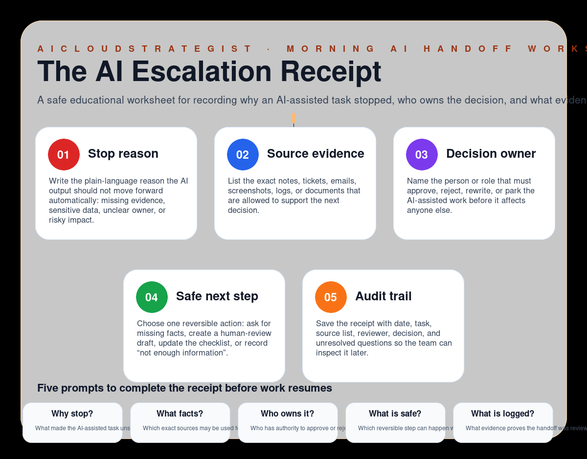

Morning publication · AI escalation hygiene
The AI Escalation Receipt
A safe educational worksheet for recording why an AI-assisted task stopped, who owns the decision, and what evidence is needed before work continues.

Five fields in an escalation receipt
- Stop reason: Write the plain-language reason the AI output should not move forward automatically: missing evidence, sensitive data, unclear owner, or risky impact.
- Source evidence: List the exact notes, tickets, emails, screenshots, logs, or documents that are allowed to support the next decision.
- Decision owner: Name the person or role that must approve, reject, rewrite, or park the AI-assisted work before it affects anyone else.
- Safe next step: Choose one reversible action: ask for missing facts, create a human-review draft, update the checklist, or record “not enough information”.
- Audit trail: Save the receipt with date, task, source list, reviewer, decision, and unresolved questions so the team can inspect it later.
Five prompts before work resumes
- Why stop?: What made the AI-assisted task unsafe, uncertain, or incomplete?
- What facts?: Which exact sources may be used for the next review?
- Who owns it?: Who has authority to approve or reject the next action?
- What is safe?: Which reversible step can happen without external impact?
- What is logged?: What evidence proves the handoff was reviewed?
How to use this receipt
Use this receipt when an AI-assisted workflow reaches uncertainty: a missing fact, a sensitive decision, unclear ownership, or a public/customer-facing consequence. The goal is to pause safely, capture evidence, and route the next step to a responsible reviewer.
Truth boundary
Educational workflow only — not legal, compliance, medical, financial, security, certification, savings, ranking, revenue, booking, or guaranteed-performance advice.
Need a safe AI operating review?
AICloudStrategist can review escalation points, owner handoffs and evidence gaps before risky AI-assisted work goes live.